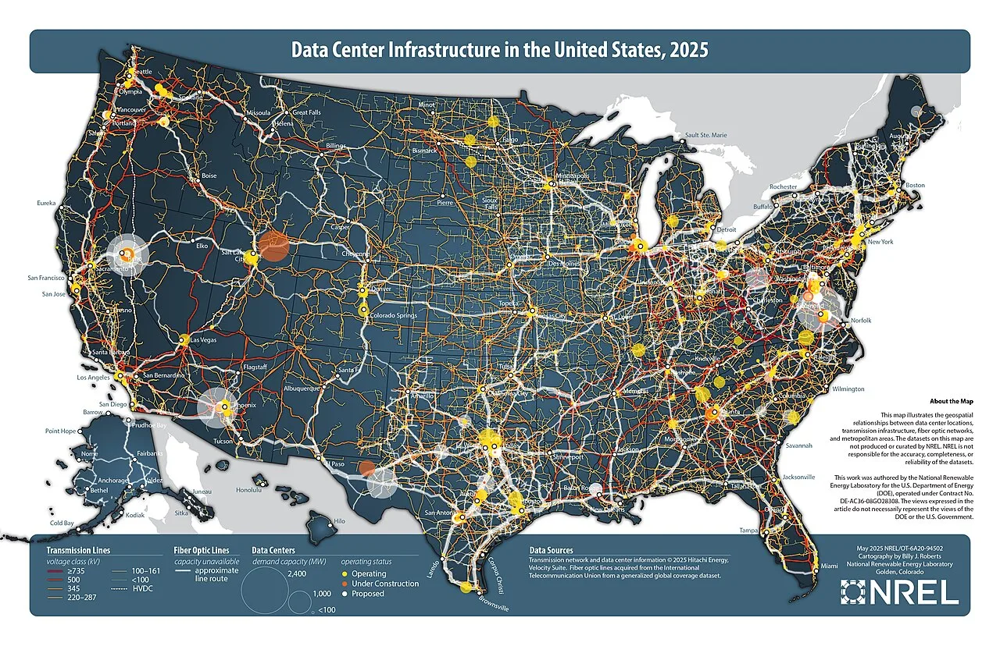

메모리는 남는데 서버는 부족합니다

데이터센터에서는 CPU와 GPU만 부족한 것이 아닙니다. 어떤 서버는 메모리가 남고, 어떤 서버는 메모리 때문에 작업을 못 올립니다. 서버 단위로 메모리가 묶여 있으면 전체 자원은 충분해도 특정 작업에는 부족한 상황이 생깁니다. CXL이 주목받는 이유는 이 낭비를 줄일 수 있다는 기대 때문입니다.
CXL은 CPU와 장치 사이를 더 유연하게 연결해 메모리 확장과 풀링을 가능하게 합니다. 이론적으로는 여러 서버가 필요한 만큼 메모리를 가져다 쓰고, 비싼 DRAM을 더 효율적으로 배치할 수 있습니다. AI 추론, 인메모리 데이터베이스, 대규모 분석처럼 메모리 요구가 큰 작업에서는 매력적인 그림입니다.
지연시간은 표준 문서 밖에서 드러납니다
문제는 메모리가 가까울수록 빠르다는 기본 원리입니다. CPU 옆에 붙은 로컬 DRAM과 CXL 장치를 거친 메모리는 지연시간이 다릅니다. 모든 작업이 이 차이를 견딜 수 있는 것은 아닙니다. 대역폭이 충분해도 지연시간에 민감한 데이터베이스나 실시간 서비스는 성능이 흔들릴 수 있습니다.
그래서 CXL 확산은 표준 버전보다 벤치마크와 운영 경험이 중요합니다. 어느 워크로드를 CXL 메모리에 올릴지, 어떤 데이터는 로컬 DRAM에 남길지, 장애가 났을 때 어느 범위까지 영향을 받는지 정해야 합니다. 반도체 회사가 장치를 만들고 끝나는 시장이 아니라 운영체제와 클라우드 스케줄러가 같이 움직여야 하는 시장입니다.
소프트웨어가 메모리를 배치합니다
CXL 메모리가 실제로 돈을 벌려면 소프트웨어가 메모리 계층을 알아야 합니다. 운영체제는 로컬 메모리와 확장 메모리의 속도 차이를 이해하고, 애플리케이션은 어느 데이터가 느린 메모리에 있어도 되는지 판단해야 합니다. 클라우드 사업자는 고객에게 복잡함을 숨기면서도 내부에서는 자원을 촘촘히 배치해야 합니다.
이 과정은 쉽지 않습니다. 기존 소프트웨어는 서버 안의 메모리를 비교적 단순하게 가정해 왔습니다. CXL이 들어오면 메모리는 더 넓어지지만 동시에 더 계층적이 됩니다. 개발자는 성능 병목이 CPU인지, 네트워크인지, CXL 메모리인지 구분해야 합니다. 좋은 하드웨어가 있어도 관측 도구가 부족하면 운영팀은 보수적으로 움직입니다.
사업성은 절감액으로 검증됩니다
CXL의 사업성은 “새 기술”이 아니라 “얼마나 덜 사도 되는가”로 검증됩니다. 서버마다 여유 메모리를 과하게 붙이지 않아도 되고, 특정 작업에만 큰 메모리 풀을 배정할 수 있다면 투자 이유가 생깁니다. 반대로 장치 가격과 운영 복잡도가 절감액을 넘으면 실험실에서만 좋은 기술이 됩니다.
반도체 투자자는 CXL 관련 발표를 볼 때 컨트롤러, 스위치, 메모리 모듈, 서버 플랫폼, 소프트웨어 파트너를 함께 봐야 합니다. 한 회사의 칩만으로 시장이 열리지 않습니다. CXL 메모리는 데이터센터가 메모리를 사는 방식을 바꿀 수 있지만, 그 변화는 지연시간과 소프트웨어가 충분히 설명된 뒤에야 본격화됩니다.
메모리를 나눠 쓰려면 지연을 설득해야 합니다
CXL이 기대를 받는 이유는 서버 안의 메모리를 더 유연하게 쓰게 해 주기 때문입니다. 데이터센터는 어떤 서버에는 메모리가 남고, 어떤 서버에는 부족한 일이 자주 생깁니다. 메모리를 풀처럼 묶어 필요한 곳에 배분할 수 있다면 장비 활용률이 좋아지고, 비싼 고용량 메모리 낭비를 줄일 수 있습니다.
하지만 메모리는 저장장치보다 훨씬 민감합니다. CPU 가까이에 붙은 메모리와 외부로 확장된 메모리는 접근 지연이 다를 수밖에 없습니다. 인공지능 추론, 데이터베이스, 캐시, 분석 작업이 이 차이를 얼마나 견딜 수 있는지가 실제 도입의 기준입니다. 벤치마크 숫자만으로는 운영 중 튀는 지연을 다 설명하기 어렵습니다.
소프트웨어도 함께 바뀌어야 합니다. 운영체제, 하이퍼바이저, 클러스터 관리 도구가 어떤 데이터를 가까운 메모리에 두고, 어떤 데이터를 확장 메모리에 둘지 판단해야 합니다. 이 배치가 어긋나면 용량은 늘었는데 성능은 떨어지는 일이 생깁니다. 하드웨어 신기술이 소프트웨어의 손을 빌려야 하는 대표적인 사례입니다.
공급망 관점에서는 메모리 업체, 서버 업체, 스위치 업체, 클라우드 사업자가 동시에 움직여야 합니다. 한 회사의 부품만 준비되어도 고객은 전체 시스템을 살 수 없습니다. 표준이 안정되고 상호 운용성 검증이 쌓여야 대형 고객이 안심하고 도입합니다. 이 과정은 발표보다 느리지만 한번 자리 잡으면 오래 갑니다.
따라서 CXL 투자는 단순한 메모리 증설 테마로 보면 부족합니다. 실제 매출은 어떤 워크로드에서 먼저 열리는지, 클라우드 사업자가 어떤 세대 서버에 넣는지, 소프트웨어가 자동 배치를 얼마나 잘하는지에 달려 있습니다. 메모리를 나눠 쓰는 시대는 올 수 있지만, 지연시간을 납득시키는 회사가 먼저 이익을 가져갈 가능성이 큽니다.
관련 영상
데이터 처리의 신세계를 보여줄게, 차세대 메모리 CXL
CXL은 메모리 부족을 해결하는 마법이 아니라 배치를 바꾸는 기술입니다. 성공 여부는 표준 이름보다 실제 서비스에서 절감되는 서버 수, 유지되는 성능, 관리 가능한 장애 범위가 말해 줄 것입니다.
CXL을 보는 투자자는 표준 이름보다 실제 채택 순서를 봐야 합니다. 먼저 클라우드와 대형 데이터센터가 특정 워크로드에서 테스트하고, 그다음 서버 제조사가 검증된 구성을 반복 판매하며, 마지막으로 운영 소프트웨어가 자동화 수준을 높이는 흐름이 필요합니다. 메모리 용량을 늘리는 것만으로는 충분하지 않습니다. 지연시간이 예측 가능하고 장애가 났을 때 데이터가 안전하게 남아야 합니다. 이 조건을 만족하는 회사는 메모리, 스위치, 서버, 관리 소프트웨어 어느 쪽에 있든 CXL 생태계의 실질 수혜를 받을 수 있습니다.
CXL이 성공하면 서버 구매 방식도 달라질 수 있습니다. 지금은 최대 사용량을 예상해 메모리를 넉넉히 붙이지만, 앞으로는 필요할 때 풀에서 빌려 쓰는 식의 설계가 늘어날 수 있습니다. 이 변화는 메모리 업체에는 더 다양한 제품군을, 서버 업체에는 새로운 검증 부담을 만듭니다. 고객은 비용 절감을 원하지만 장애 위험은 원하지 않습니다. 그래서 초기 시장은 가격보다 안정성 증명이 더 큰 설득 포인트가 됩니다.
CXL은 멋진 표준 이름보다 운영 현장의 문제 해결력으로 평가받아야 합니다. 남는 메모리를 필요한 곳에 보내면서도 속도와 안정성을 잃지 않는지가 시장 확대의 문턱입니다.